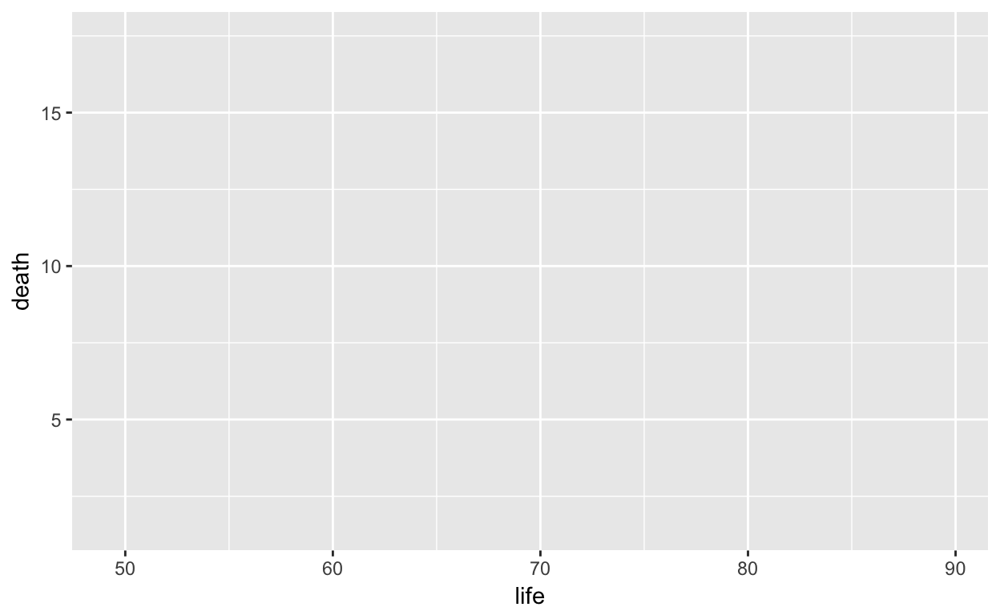

ggplot graphics# code to be evaluated before exercise code
library(statisticalModeling)
library(DataComputing)You’ve already seen how gf_point() can be used to draw graphics. For example, the scratch chunk below already contains the commands to draw a scatterplot that relates death rates, life expectancy, and Gross Domestic Project per capita (GDPcapita, which is a measure of economic activity).
library(statisticalModeling)
gf_point(death ~ life + alpha:GDPcapita, data = CountryData)Functions like gf_point() are built on another graphics system that is very widely used in Data Science, ggplot2. Many people find the formula interface provided by gf_point() easier to use than the native ggplot2 interface, but once you get used to ggplot2 it is just as easy and it provides greater flexibility.
By using and argument verbose = TRUE to gf_point(), you can see exactly what is the ggplot2 command created.
Try that in the above code chunk.
Now copy and paste that ggplot2() command into the following chunk, and confirm that it makes exactly the same plot.
library(statisticalModeling)
data(CountryData, package = "DataComputing")Add verbose = TRUE as an argument to gf_point() in order to see what the corresponding ggplot2 command looks like.
# code or text that's a solution to the exercise# put pre-evaluation checking here. This can be blank, in which case
# the code will be checked by the interpreter with the usual R error messages
# shown in the even of a problem.
check_blanks(USER_CODE)set_success_message("Good.") # change as you like
test_1 <- find_call("ggplot()",
message = "use the `ggplot2` command in this code pane.")
test_2 <- find_call("geom_point()",
message = "did you include the whole `ggplot2` command, including `+ geom_point()`?")
test_3 <- check_value(test = agrees(inherits(x, "ggplot")),
message = "it doesn't look like you copied the whole command.")
USER_CODE %>% test_1 %>% test_2 %>% final_ %>% test_3data(CountryData, package = "DataComputing")
library("ggplot2")
library("dplyr")In previous exercises, you used a formula-based interface to the ggplot2 system for graphics. That formula-based interface is intended to be easy for getting started with making simple graphics. In these exercises, you’ll practice with the ggplot interface itself.
The ggplot() function is used to define a the graphics frame. The frame it makes is blank, ready to have additional layers of glyphs added to it. The typical arguments to ggplot() are:
ggplot().aes() statement which constructs the mapping from variables in the data table to the x and y aesthetics, that is, the frame itself.The graphic shows a (blank) frame constructed by ggplot(). (We’ll add layers to this blank frame in the exercises that follow.)

# Provide access to CountryData
data(CountryData, package = "DataComputing")
# Attach the ggplot2 package
library("ggplot2")
# Fill in the blanks ...
CountryData %>%
ggplot(aes(x = ___, y = ___))As you can see, life is being mapped to the x aesthetic, death to the y aesthetic. It will seem a bit odd at first, but remember to use aes() as a function, given as an argument to ggplot(), and map the aesthetics by giving appropriate arguments to aes().
data(CountryData, package = "DataComputing")
library("ggplot2")
CountryData %>% ggplot(aes(x = life, y = death))# put pre-evaluation checking here. This can be blank, in which case
# the code will be checked by the interpreter with the usual R error messages
# shown in the even of a problem.
check_blanks(USER_CODE)set_success_message("Good job!") # change as you like
test_1 <- find_call("aes(x = life, y = whatever)",
message = "map `life` to the x axis.")
test_2 <- find_call("aes(x = whatever, y = death)",
message = "map `death to the y axis")
USER_CODE %>% test_1 %>% test_2library(DataComputing)A blank frame is useful only as a place to draw glyphs. The ggplot() function only creates the frame, it doesn’t do any drawing.
You draw glyphs by adding a layer to the plot. There are many, many functions in the ggplot system for drawing different types of glyphs. For example a scatter plot can be made with geom_point(), a box-and-whiskers plot with geom_boxplot(), and so on.
It’s typical that the x and y aesthetics are set in the aes() function, contained as an argument to ggplot(). Similarly, the data table containing the cases to be plotted is piped into the ggplot() function. This is the way that the command in the folloing code pane is set up.
To add a layer into the frame, follow the ggplot() function call with a + and follow that with a call to the layer-drawing function. (The + is a kind of piping operator, specifically for ggplot(). In data wrangling, the pipe operator is, of course, %>%. It’s only for historical reasons that ggplot() uses + instead of %>%.)
CountryData %>%
ggplot(aes(x = life, y = death))Scatter plots are made with geom_point()
CountryData %>%
ggplot(aes(x = life, y = death)) +
geom_point()# put pre-evaluation checking here. This can be blank, in which case
# the code will be checked by the interpreter with the usual R error messages
# shown in the even of a problem.
check_blanks(USER_CODE)set_success_message("Good job!") # change as you like
test_1 <- find_call("whatever + whatever",
message = "use `+` to connect the frame and the glyph layer.")
test_2 <- find_call("geom_point()", "the added layer should be a scatter plot of the cases in `CountryData`.")
test_3 <- check_value(test = agrees(inherits(x, "ggplot")),
message = "it doesn't look like the plot was made.")
USER_CODE %>% test_2 %>% test_1 %>% test_2 %>% test_3aes()library(DataComputing)
library(ggplot2)The commands in the code pane are a non-working attempt to create a scatterplot of death rate versus life expectancy in the CountryData data table. Fix it.
CountryData %>%
ggplot(x = life, y = death) +
geom_point()Almost everything is correct in the command as given: the name of the data table, the use of geom_point() to add a scatter-plot layer, the variable names. Just one thing is missing.
CountryData %>%
ggplot(aes(x = life, y = death)) +
geom_point()# put pre-evaluation checking here. This can be blank, in which case
# the code will be checked by the interpreter with the usual R error messages
# shown in the even of a problem.
check_blanks(USER_CODE)set_success_message("Good job!") # change as you like
test_0 <- find_pipe_start("CountryData",
message = "put back `CountryData` as the start of the pipe.")
test_1 <- find_call("ggplot(whatever, x = whatever, y = whatever)")
test_2 <- find_call("aes(x = whatever, y = whatever)",
message = "where do you map the variables to the x and y aesthetics?" )
test_3 <- find_call("whatever + whatever",
message = "the two components of the plot --- the frame made by `ggplot()` and the layer made by `geom_point()` --- are connected with the `+` operator.")
test_4 <- find_call("geom_point()",
message = "remember to add the scatter-plot layer with `geom_point()`.")
USER_CODE %>% test_0 %>% test_1 %>% was_mistake("you still haven't fixed it.") %>% test_2 %>% test_3 %>% test_4 Facet on high versus low birth-rate (or median age) to distinguish between the rich countries with high death rates and those with low death rates.